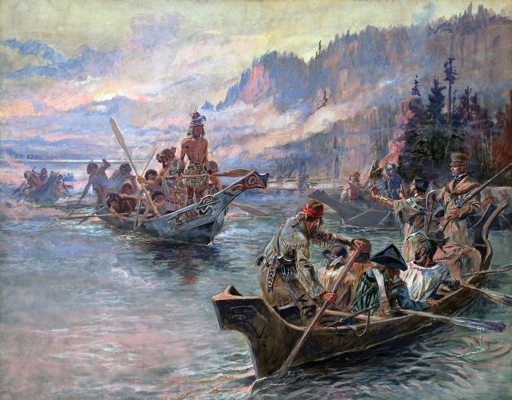

Discover the thrill and adventure of white water rafting with this comprehensive guide. Learn about the best locations, safety tips, and how to book a memorable white water rafting experience.
Discover the thrill and adventure of white water rafting with this comprehensive guide. Learn about the best locations, safety tips, and how to book a memorable white water rafting experience.
Centuries ago, Native Americans crafted very sturdy wooden rafts to access the waters on the hunt for the rich fishing spots. The raft building skills learned and passed through generations of Native Americans were eventually passed on to Lewis and Clark as they made their journey west through the great Northwest.

Whitewater rafting can be traced back to 1811 when the first recorded attempt to navigate the Snake River in Wyoming was planned. With no training, experience, or proper equipment, the river was found to be too difficult and dangerous. Hence, it was given the nickname "Mad River".